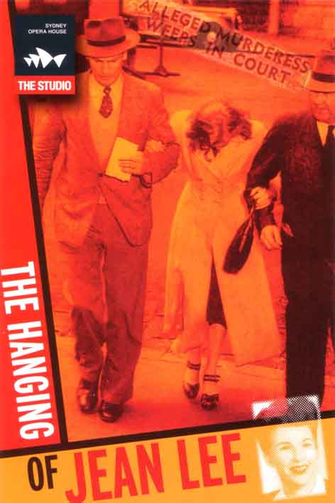
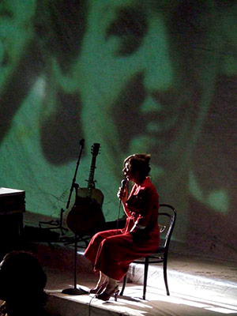
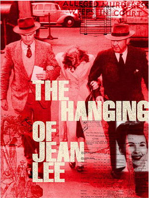

|
The Hanging of Jean Lee : Jordie Albiston |
||||||||||||
 |
Reviews Something is Always Ushering Us: Recent Australian Poetry Alan Gould Quadrant, No. 364, Vol. XLIV, No. 3, March 2000 A thoroughly ill-written book on the HSC syllabus can suggest a committee has been successfully lobbied - one hears the gossip. Equally, its members may simply be ill-read in Australian poetry. Either way, the damage is the same when a wideawake Year 12 student, coming from the superb craftsmanship of Wilfred Owen or Judith Wright to the prosy inconsequence of Westbury’s ‘These Days’ or ‘After the Deadline’ [Mouth to Mouth], and finding in all that accessibility not a shadow of insight or entrancement, asks, ‘And do I also count these with what is wise, moving and good in poetry?’ Somewhere, I suggest, a curriculum committee needs sufficient respite from its sessions to form its taste in what can and can’t pass as a poem. That committee might do well to place The Hanging of Jean Lee (Black Pepper) before its students, for Jordie Albiston’s verse novel is a thoroughly compelling, incisive and finely wrought sequence of poems which probes the fate of a particular woman, Jean Lee, hanged in 1951 at Pentridge for her part in a murder. Stories of this kind, whether in verse or a newspaper column, have a characteristic momentum, one that is governed by the reader’s grim foreknowledge of how things will end. This momentum entails an emotional response, in part dread for the narrowing of a life towards the ghastly and clinical details of the scaffold, in part a furtive excitement as to how this character fell towards this fate, how a life entered a vortex. Elizabeth Bishop’s ‘The Burglar of Babylon’, and some of the Icelandic ‘outlaw’ sagas have a similar fatalist momentum. With an acute eye for period and sociological accuracy, Albiston takes us through Jean Lee’s thirty-two years from birth notice to execution. There are the skipping rhymes of childhood, domestic frugalities, the experience of church, 1930s Sydney and the building of its bridge. Into this everyday, and with telling constraint, Jean’s depressive episodes and her later rages are introduced. Indeed Jordie Albiston’s constraint is impressive, for Jean Lee’s story doubtless held opportunities for polemics whereby a present sensibility punishes the past for being sexist, judicially brutal, whatever. But this poet is an artist. Her focus is steadily upon the vivid individuality of her protagonist. It is Jean Lee who reacts characteristically against her treatment by the menfolk in her life, who denies God and church as her personality compels, who goes with piteous realism to the gallows. The moral underpinning of the story is the surer for this fidelity to character and detail, and so much more accomplished than the best-seller collections I have in mind in my third paragraph above. But this verse novel compels, not only for what may be visualised, but also for what may be heard. Albiston’s ear is as finely tuned to childspeak as it is to Australian working-class argot of the 1930s and 1940s. Throughout the story’s four chapters there is a rhythmic arrangement similar (as I understand it) to rap music where rhymes are hidden within lines but where the momentum of the narrative falls towards them, sometimes with the effect of nursery rhyme, sometimes with a tolling of finality, sometimes giving an aural mimesis of the tensions in Jean Lee’s psyche. Here, in the early 1940s, she is sloughing a husband: You
licker
you stickler you fixer
of rhymes You know how you mangle me do it keep doing it do it again You’re the genius of undoing love the shade on my shadow you double the load I lug through the minute the hour ... ...Get
off
my future
You’re hurting my
heart you monkey you husband you florid false start I don’t like the way you sing in my choir and I hate the sound of your part. Finally, Jordie Albiston shows great art in structuring her story. For all that it proceeds chronologically, individual poems are intruded into the childhood and subsequent sections, foreshadowing Jean Lee’s fate and having the effect of gradually straitening the life in a way parallel to her depressive episodes and the paltriness of her criminal activity prior to the murder. The arrangement is thus best comprehended as a musical one of themes being anticipated, repeated, varied and integrated. A finely made novel requires a fine control of time, and The Hanging of Jean Lee is a case of finely judged premonitions and flashbacks. The result is a most convincing story and a most resonant work of art. I hope it brings the poet and her publisher prosperity and the gratitude of thousands. The Hanging of Jean Lee Karen Attard Cordite, No. 6-7, 2000 The Hanging of Jean Lee is based on fact. Lee, along with Robert Clayton and Norman Andrews, was convicted in 1951 of the torture and murder of William (Pop) Kent in his boarding house bedroom. All three were executed in that same year. Jean Lee was the last woman hanged in this country and the only woman executed in Australia during this century. The case was a cause celebre, minutely and sensationally reported in contemporary newspapers. Albiston has acknowledged her debt to the media by entitling the four sections of the book ‘Personal Pages’, ‘Entertainment Section’, ‘Crime Supplement’ and ‘Death Notices’. There are also several found poems in the collection which consist either of headlines or actual reportage. Some of the poems are written in the third person but many employ Lee’s voice, although her mother and the executioner are each allowed to speak in a single poem. Pop Kent is conspicuously silent, unless you count his wounds - meticulously enumerated in ‘Coroner’s Report’ - as a message written on his body, a silent record of abuse. Any contemporary exploration of a violent crime must negotiate the dichotomy between acknowledging the victim and an attempt to understand how the perpetrator came to be as they are. To give Pop Kent a voice would have been one solution to this dilemma but it wouldn’t have reflected the reality of the trials. The dead don’t speak. Albiston has chosen a more subtle approach. The Hanging of Jean Lee begins with Lee’s childhood: I am
four
years old
I can reach the front door get letters from the letter-box and bring in the milk go buy the paper and clean up what’s spilt ‘Mum’s Little Helper’ But the reader’s expectation of a simple linear progression from birth to death is disrupted by the poems ‘Interrogation’ and ‘Confession’ written in the voice of the adult Lee and inserted amongst the skipping rhymes, dolls clothes and diary entries of the first section. The innocence of childhood and some of the formative events that may have precipitated Lee’s later rage are mediated by the presence of her victim. Albiston doesn’t let us forget that a man was brutally murdered. His voice may be absent but the violence done to him isn’t: Yes I
cut
the old boy with a small pocket-knife
though it wasn’t particularly him Yes I burned his skin with some Players Bobby bought beat and bashed till he threw the towel in I s’pose I sort of done my block hit him with a bottle and a piece of wood and then he fell over ‘Confession’ But ‘Confession’ also contains echoes of the child who did ‘what was to be done’ when she attempts to take sole blame for the murder ‘I’m who you / want I did the old man it was me and me alone’. Mum’s little helper can’t clean up this mess. The hanging of Lee, as the title suggests, is central to this collection, the point to which all else leads. The prisoner is given into the hands of the executioner, and so is the poem: ...I
tie
her carefully to
the chair that she may feel held as she falls Adjust the hood and get the nod then let the trapdoor go ‘The Hangman’s Handbook’ The roots of the word execute lie in the Latin ex-sequi: to follow out, pursue, perform. In The Hanging of Jean Lee Jordie Albiston has achieved all this. ‘Cliff Hanging’ & ‘Gliding’ - The Hanging of Jean Lee Judy Johnson Ulitarra, No. 15, 1999 When I started reading The Hanging of Jean Lee, I was reminded of a comment made by Peter Boyle a few years ago that ‘powerful facts and stories are not in themselves, poems’. This statement concerned what he had judged to be the disturbing trend of some poets to prop up their work with sensational subject matter. I mention this not to accuse Jordie Albiston of ‘propping’, but to offer her writing as an example of how accomplished poetics and sensational story line can come together to create something memorable. The Hanging of Jean Lee is a series of poems about the life and times of Jean Lee, a woman I confess I knew nothing about. The book spans thirty two years from Jean’s birth in 1919, through her growing up, becoming enmeshed in a life of prostitution and petty crime, up until her hanging in 1951 for her part in the murder of aging bookmaker William (Pop) Kent in Carlton. The book is divided into four newspaper-like sections: ‘Personal Pages’, ‘Entertainment Section’, ‘Crime Supplement’, and ‘Death Notices’. To add extra illumination to events, several newspaper articles are interspersed between the poems. The most intriguing part of the collection is Albiston’s poetic exploration of the mind of Jean Lee. Although there is a chronology of events listed near the front of the book, the poet has chosen not to use a linear narrative to string the poems together. Instead, she dislocates the storyline - time and perspective leap deftly forwards, backwards and sideways. The narrators of the poems are Jean herself, her mother, and several other characters as the appear in the unfolding drama. In ‘Mum’s Little Helper’ the speaker is Jean at four years old, telling us my job
is helping my Mum When she gets tired and has her lie- down I wash up mop lino do what’s to be done I run around tidying up The next poem leapfrogs twenty six years to where Jean in ‘Interrogation’, referring to Pop Kent’s murder says Norm
and
me killed him while Bobby
walked up Lygon Street I squeeze out a tear so the mongrels will know what betrayal and fear can do to the girl. This juxtaposition of innocence and experience is a powerful tool Albiston uses often and to great effect. Like the ‘Innocents’ in Blake’s songs, Jean’s early childhood seems unremarkable and unthreatening. The fact that she deviates so far from the straight and narrow creates the tension of unanswered questions. There are foreshadowings of how Jean will end up, however. In ‘Sewing Hints,’ her mother tells us of young Jean’s dolls: See
how
she
sticks
in old dress-pins
for pearls a globe on each lobe In a later poem, ‘Bedroom Burial’, Jean dismembers the same dolls: plucks
limbs like
petals
he loves me not
and grasping a
head in each adult hand Snaps it back Her growing sociopathic detachment is at its height in ‘Confession’ where, speaking of the murder, she says Yes
I
cut the old boy with a small pocket-knife
though it wasn’t particularly him God appears, but he seems more an adversary than a comfort. In ‘Dear Diary (1934)’, Jean says I will
kill Him
but
first
I will force
Him to crawl through the valleys and shadows scrawled over my soul I will teach Him the scriptures from inside of me Despite her anger and obvious depression, Jean is clearly not a monster. In the tender ‘Jilly’s Song’, she says of her daughter When
she
cried I was
burned
a
wire
on each nipple a fire in my
womb a start-up spark to the heart. Albiston has a particular gift for conjuring immediacy through unerring colloquial voice and a historian’s concern with re-creating time and place accurately. At no point in this powerful collection is there a sense the poet is intruding on the poems. Instead, she allows them to tell their own story. It’s an un-putdown-able read. Jason Sweeney on The Hanging of Jean Lee Jason Sweeney Sidewalk, No. 2, Summer 1999 (pgs 28-29) Process: to live inside the mind, a world contained, unresolved lives, things scattered, remnants, maybe a murder will rate a lost soul to stardom, complicated, an historical name, Jean Lee, forged dentity, absent, a voice to speak it/mediate (ghost writer): poet, Jordie Albiston. A book like a scrap journal, photos and files, poem-biog. From domestic ideals, daydreams, god/God, betrayed by prayers and compressed by Our Father Which art [‘...There is no God... no more Bonnie or Clyde’ - ‘Interrogation’] or [‘When I neet God I will kill Him...’ - ‘Dear Diary (1934)’], swamped with or by guilt. Choices made to revile supposed heroes. Jean Lee: heroine in somebody else’s eyes. Viewing character statements, evidence of a life in descent, progress made, toward death. Albiston nakes no claims, she surveys and samples (like UK sound artist, Scanner, who maps cities by documenting the voices of people, jacking moments/movements, splicing together), it’s a surreal listory written in disturbing clarity, making attempts to link events, like watching a television through incessant static. No judgements, fears remain (of what can not be left) alone. A cut-up. A killing. A girl (Lee) painted in lucid text with a razor dipped in blood. To a page. A trial. Crimes out of sync, no confession to sanctify the sinner, pure admissions, statements, articles, items, witnesses, appropriations of news reports, serving (somehow) a narrative, a sentence. Jean went too far [‘I sort of done my block... I was joing my job’ - ‘Confession’). Albiston parallels and shifts stuff around. Makes reference. Textual stains. Metaphors/origins for the grime of Jean Lee’s future gutters. A forgotten (Australian) figure archived, a pathway leading to an execution for a dark soul. No bright impressionistic landscapes here, only worn, dirtied canvases, complex in detail. Words cite ‘fact’ [‘...Lee is the first woman to be hanged at this prison’ - ‘Reportage (The Sun)’]. The subject’s final sight: Pentridge. A scene extracted from In Cold Blood. That kind of movie. That kind of book. Images, I am reminded... and shattered. A sequence of events leading up to, before and after, the effect. Albiston’s ‘Mug Shot I’ and ‘Mug Shot II’ are evidence of identity trauma. A sick portrait of a Lee losing it, on her way down, beyond retribution. Losing children, a lost child, all measured in regret (perhaps) or delusion (I figure) and guilt (probably), in public domain, sensational. Her death (a bible hung with her) channelled into/through poems, indexed by title, name, author, subject, Jean, Jordie, Albiston, Lee. Spirit needs a tool. Jean: her name is alive in Jordie. And the book is framed. Executed, read, relevant. Making The Hanging of Jean Lee an epic tragedy, a libretto for a fucked up life. Reduced to an object, on display, for the record. Poets struggle with experience - The Hanging of Jean Lee Julian Croft Antipodes, Vol. 13, No. 2, December 1999 Decorating the cover of Jack Hibberd’s first collection of poetry [The Genius of Human Imperfection] (Hibberd is better known as a prolific playwright and occasional novelist) is a George Grosz drawing of one of his embodiments of Weimar decadence. And broken across the cover of Jordie Albiston’s volume is a collage of a photograph of murderer Jean Lee being taken to court in 1950... The unitary view of the satirist sure of the evils that surround him contrasted with the fragmentary identities that make the individual in the late twentieth century are neatly contrasted. The two views come from poets separated by thirty years and very different world-views. Hibberd writes with the weight of the past and from the Olympian heights of certainty. Albiston writes from the inside of a consciousness that does not understand what is going on, but tries to define where she is by her relationships with her family, her lovers, and her daughter. There is nothing new about the multi-vocality of the poet’s speaking position: Shakespeare did it in the sonnets (perhaps he could not escape his everyday chameleon exercises in writing for the theater), and poets have often fragmented their sensibilities in order to move in space and time. What is different, though, in these two poets is how one strives for the certainty of the Enlightenment in his analysis of the human condition, and the other constructs meaning from the bricollage of consciousness - thought and feeling, and empirical textual markers - newspapers, diaries, oral traditions... While Hibberd writes to mark his own territory, Jordie Albiston moves into Browning’s - the representations of consciousnesses at some other time and place removed from the poet’s, and in The Ring and the Book, to murder and its motivation and meaning. Albiston has chosen two murders: one by Jean Lee, and the other the state’s murder of her in the last hanging of a woman in Australia in 1951. Like Browning’s epic, the poem is based on textual remains, and Albiston’s poem is broken up into sections that mimic its newspaper origins: Personal Pages, Entertainment Section, Crime Supplement, Death Notices. That is not to say that each poem reads like a text from a newspaper; they do not. In fact they cover many kinds of inscriptions: rhymes, school reports, diary entries, direct to camera statements, coroners’ reports; but they all purport to be some physical and direct textual remnant of Jean Lee’s life. The narrative convention is that of the television documentary in which actualité is beefed up with dramatizations, speculations by others, and on-camera revelation. The style is spare and subtle, and the imagery direct and striking. Occasionally Jean Lee’s voice sounds more like a radio drama of the time, at least to these ears, which though it makes sense in a way, sounds thin and trite at times. On others, Albiston gets the right register and makes her subject’s voice move away from flat prose into the full weight of poetry - compare ‘Spring Carnival Fever’ with ‘Leaving Ray Brees’; in the latter the nervous rhythms and the heightened language movingly capture Jean’s impatience and the general war fever of late 1939: ...It
seems
a
long way from here to the
Front but the war’s in my blood and I simply can’t feed Baby darn socks work days be a wife while you do as you please with our life So that’s me I’m done little Jill’s right with Mum and I’m going AWOL tonight Give it up Honey Hand in your gun This War’s all over and nobody won What Albiston does well is tell the story economically and forcefully. Although Jean Lee’s life and crimes are given to us in a basically chronological sequence (and there is a skeletal chronology at the beginning of the collection), Albiston has allowed her subject’s consciousness to move around in time, building up to the pathetic climax of her hanging. The blend of direct and indirect narrative through real and imagined sources and revelation from Lee herself create a finely realized and sympathetic account of a blighted life. And there is the added benefit of some very moving and intelligent poetry. New Writing - The Hanging of Jean Lee David Wood Imago, Vol.11, No.3, 1999 The Hanging of Jean Lee, by Jordie Albiston, is poetry of an entirely different kind. Jean Lee, who viciously murdered William (Pop) Kent in 1949, was the last woman to be hanged in Victoria. Jordie Albiston’s work is a contemporary epic, a danse macabre, which haunts us with its moribund sentiments. It is Dorothy Porter, of course, who has brought such gothic tales centre stage in contemporary Australian poetry, appealing with verse both muscular and accessible. Although Jordie Albiston does not parallel Porter’s rhythmic verve, her collection is impressive on a number of other accounts. The first thing that impresses one about The Hanging of Jean Lee is its elegance and technical accomplishment: fifty-five individual poems effectively hang together to form an impressive whole. Jordie Albiston brings to these poems a highly refined sensibility, a deft poetic talent with a sensitive ear for cadence and tonal modulation. Her counterpoint of rhythms, some cleverly off-beat, can be strong and compelling: I
stepped
off the overnight onto the payroll
of Lennons Hotel on George served sass and liquor in appropriate rations to General MacArthur and his white GI boys at their Brisbane watering-hole I just had to get out of Sydney the bastard wouldn’t leave me alone ‘Living it Up’ It is a pity that the collection does not climax more effectively. This is partly due to the fact that this small epic is not told strictly chronologically, to the moment of Lee’s hanging, partly because Albiston’s technique lacks sufficient muscularity. The tale ends with a nursery rhyme: She
is
dead she is dead says Peter to Robin
She is dead she is dead says Robin to Bobbin... The Hanging of Jean Lee is a musical collection of poems grim as Humperdinck’s Hansel and Gretel. It makes engaging reading from a poet of considerable insight and technical skill. Poetry as History - The Hanging of Jean Lee Dipti Saravanamuttu Overland, No. 156, Spring 1999 Opening this book is like opening a book of photographs - the poems are instantly both detailed and absorbing. Jordie Albiston’s third collection of poetry is about the life and trial of Jean Lee, the last woman hanged in Victoria. Convicted, along with her lover Robert David Clayton, ‘Bobbie’, and a third male accomplice, of the torture and murder of William ‘Pop’ Kent in November 1950, she was hanged in 1951. As a work of imaginative sympathy the poems sustain an emotional force and directness that one wonders if Albiston would allow herself if writing from her own persona. Certainly the poems about God are like this, but the poems about childhood, about marriage and about birth, are equally striking: When
I
meet God I will
kill Him With Bible and knife I will cry for His life in words even He won’t he willing to fight ‘Dear Diary’ This book could be a who-dunnit, if one did not already know the ending - with the clues being literary ones, to be found in the early poems about childhood and adolescence, hinting as they do, of the existence of violence, and the role of law, and the law of the father. She dresses her dolls ‘for a stroll / down streets lined with knives’ in material cut from the lamp in the lounge: O my
Lord
just you wait
till your father gets home You can’t do as you please whenever you like there’s no room for children with pincers for fingers in this house tonight or any night ‘Sewing Hints’ It’s possible to suggest that the murder of Pop Kent is synonymous with the murder of the principle of authority or the rule of law. And that the symbolic murder of the father (‘Pop’ Kent) betrays the wish to substitute logic and sanity with their opposite, to replace these things with chaos, tyranny and cruelty. These elements are there, and give the poems their strongly metaphysical undertones, despite their readabilily and apparent lightness. But it’s as if the poets enters into the spirit and the mind of Jean Lee to such an extent that these elements are written in as opposites: if religious imagery and the hope of traditional religion are presented as a form of salvation at the end, so are they fearsome and threatening: These
walls
are angels in their
hordes families of vampires Vultures and harpies are the performers of religious rites in this poem: A
couple
of
them sing to me we
will watch over thee give me communion in a medicine cup ‘Cell Talk’ The angels are prison guards, ‘and angels / have taken Jean under / their capable wings’ (‘Final Night’). The book is constructed in rhymes and half rhymes, and employs constant alliteration with a dexterity unusual in a modern poet. This is quite a formalistic book, although a preoccupation with form is not to any degree a requirement for understanding and enjoying the poetry. The poems ‘unpack’ rather than wear their construction in an ornate or intrusive way. The humour in these poems is not exactly caricature, rather, something between bleakness and whimsy, an odd unusual angle on life that is probably the poet’s best grace in dealing with her rather grim subject matter. This is a very carefully crafted book, and a highly intriguing one, not least because it calls into question ideas about the role of poetry as history: for instance, given that our interpretation of historical events is always to a degree subjective anyway, how valid a medium is poetry, to explain or analyze the underlying factors within significant events? If this book is anything to go by, poetry is an extremely capable medium, it would seem. Cities of body and mind Barry Hill The Weekend Australian, 28 August 1999 There is a pile of slim volumes growing on my desk and I have to choose. Among the better ones, three [Alex Skovron, Infinite City, Jack Hibberd, The Genius of Human Imperfection and Jordie Albiston, The Hanging of Jean Lee] arrange themselves under the heading ‘City’ - the city as body, mind and perhaps soul... Crime is at the heart of Jordie Albiston’s city in The Hanging of Jean Lee because she has chosen to shadow the life of a murderer. The book comes with a flyer that gives the tabloid story of Lee who, with her pimp and standover partner, bashed an old SP bookie to death in Carlton in 1951. It seems to have been a crime that pushed the ugly mug of Melbourne into its own mirror. Albiston is good on the idiom of the times, and the casual desperation of the down-beat characters who hung around bookies and pubs. It would have been tempting to become feminist-chic about Lee but the poems are too well tuned for that. The blank, suburban childhood, the slippage of life chances, the ultimately inexplicable murder, are well conveyed - their special banality highlighted. As a whole, the book works in the mind like a novel, which is some achievement considering the spare poetry. Poem by poem, though, it is patchy, and only breaks out of its tabloid strongly in the poems about God. That is the challenge to which the book has only partially risen: how to tell a tabloid story without the tabloid murdering the art? Views & Reviews Bev Braune Heat, No. 12, Winter 1999 Judgements and confinement - personal and public - are the common themes of [Dorothy] Porter’s volume [What a Piece of Work] and Jordie Albiston’s new collection, The Hanging of Jean Lee, where ‘God / is hurling angels down’ (‘Dear Diary 1951’). Jean Lee was the last woman hanged in Australia, in 1951. She was convicted with Robert Clayton and Norman Andrews for murdering Pop Kent in Victoria in 1949. The Hanging of Jean Lee opens with a chronology of Jean Lee: from her marriage on 28 July 1903 to her hanging on 19 February 1951. Albiston’s acknowledgments include reference to Wilson, Lincoln and Treble’s Jean Lee: The Last Woman Hanged in Australia and archival source material used in composing her book. As well, the publishers include a photocopied extract from a Herald article (March 28, 1951) on the Jean Lee case - her Catholic school education, her factory jobs, her taking up with Clayton, ‘underworld sniveller and prostitutes’ gentleman’, to street-walking and finally to robbery and murder. Albiston has organised her interpretation of Lee’s life in a refracting series of multiple voices - reportage by Lee’s family, newspapers, the autopsy report on Pop Kent, and Lee’s Dr Jekyll-and-Mr Hyde voice (even after we have come to accept, as readers, that she is dead). Judgement - and confinement - is a subject which characterises some of the best literature of this century - Franz Kafka’s Die Verwantlung, Jack Mapanje’s Skipping Without Ropes, Anna Akhmatova’s Selected Poems, David Constantine’s Caspar Hauser and Kamau Brathwaite’s Middle Passage trilogy. Porter’s and Albiston’s books foreground human realities as part of their critical assessments of the ‘form’ side of imprisonment, that is, the physical and experiential machinations of confinement. For, as Ryle would have argued, you cannot speak about people’s minds without speaking about their physical world; to do so is to comply with the Descartes’ category mistake, to regard mind and body as separate spheres of existence. Institutions come and go - the Soviet Union, Callan Park Hospital for the Insane. Capital punishment in Australia no longer exists; Pentridge Prison does. But in the minds of those who suffered under such systems either as the warders or the prisoners or those writing about either, the worlds of constraint are alive as ever, as Albiston so effectively conveys in relating the events Jean Lee’s life. As Lee’s teacher is reported to have said of her: ‘she seems / to reside quite a lot in her head’. And as Lee’s voice confirms: But
how I wish I
was
out with
my
Dad
on the Chase in our worn wooden
boat My cocoon quietly hardens You’re drifting away I’m going inside I dread this ‘Dear Diary (c.
1931)’
The theme of the restricted woman, that territory of real, imprisoned lives, is Albiston’s singular interest in her published collections to date. Her first collection, Nervous Arcs (1995) opened, not surprisingly, with: ‘I am a woman locked in a / room in a house in a / suburb/ you could call me / some kind of princess / though the only spinning / done is in my head / this is / my industry.’ Whereas in Porter’s book we view the world through the gaoler’s eyes, in Albiston’s it is that of the gaoled. We are reminded in both volumes that there is some little difference between the experiences of gaoler and gaoled. This new volume brings into sharp focus the question of the possibly indispensable false judgement of the last woman to be hanged in Australia: Lee was morally corrupt (a ‘bad’ woman), would have come to a ‘bad’ end and was therefore rightfully convicted for murder and for being morally corrupt. There seems no doubt that Lee had a hand in the murder of Pop Kent. It is the judgement of Lee as an ‘unrespectable woman’ that has captured Albiston’s imagination. This element gives real substance to Lee’s voice, her anger against God and her desire for absolution from social confinement such that physical confinement allows her ‘space’ for mental freedom, at least the space where Albiston convinces us that Lee can be free -‘in her head’. Albiston’s uses overt and covert caesura which worked to some extent in Nervous Arcs and Botany Bay Document (1996). Here she has taken the poetic form, and the theme of bondage, further than a contemplation of the isolated woman, in the suburbs or as a convict, to the study of an historical figure who indulged in acts of sexual bondage as a prostitute and was a convicted murderer. It will be interesting to see if Albiston will be able to break free of the compelling mid-line and end-line casurae form which dominates her poetry. In The Hanging of Jean Lee she has been able to draw a balance between the objective and subjective by manipulating form to her advantage, exemplified by ‘Mug Shot I’, ‘Dear Diary (1941)’, ‘You Stalker’, ‘In Defence of the Working Girl’, ‘Note to a ‘daughter’ and ‘The Hangman’s Handbook.’ I tie
her
carefully to
the chair that she may feel held as she falls Adjust the hood and get the nod then let the trapdoor go If Jean Lee had lived twenty years later, she might have been a patient under the ‘care’ of a Peter Cyren [What a Piece of Work] - the evidence of Dorothy Porter’s powerful book leaves me feeling that such a fate would have been worse than hanging. A Grim And Rough Story - The Hanging of Jean Lee Dorothy Hewett Australian Book Review, No. 210, May 1999 The Hanging of Jean Lee is the third verse novel I have reviewed recently, except that this one is closer to the verse documentary. As one might expect, it is a grim, tough story of the deterioration of a young woman’s life and its brutal end. It is divided into four sections with deliberately cold-hearted titles, Personal Pages, Entertainment Section, Crime Supplement and Death Notices. The Hanging of Jean Lee is economically and imaginatively conceived with a strong narrative drive. In a series of short connected poems, Jordie Albiston has made a heart-breaker out of her material, ringing the verse changes, using rhyme and blank verse in short chopped lines, colloquial language, reportage and newspaper headlines with considerable skill. Jean Lee was born in Dubbo in 1919, the daughter of a railway man. Later the family shifted to Chatswood, ‘a normal family in a normal house in a normal suburb on Sydney’s north shore’. Yet it took Jean only fifteen years to reach the gallows, the last woman to be hanged in Pentridge jail. An attractive, lively redhead, she attended a Catholic school, passed her intermediate, and began moving from factory job to factory job, all well below her intelligence level. She married at eighteen but it ended only a year later, leaving her with a baby daughter and ‘a trail of rent bills from Redfern to Glebe’. What
a
waste of a wedding.
What a fool of a bloke! With the outbreak of World War II, she becomes ‘a soldier’s girl’: Call
me
yank lover
cunt to my face. It doesn’t take her long to graduate into prostitution. This
is
work and as far as I can see
You wanna touch? You wanna feel? You wanna pay the lonely man’s fee. Her lover and pimp is Robert Clayton, a well known petty crim, embezzler, housebreaker and drunk roller. She calls him ‘her Bobbie’. In the underworld of Sydney, Perth, and eventually Melbourne, she is known as Skinny Jean. Together they work the streets, cheap rooms and pubs, Jean as decoy, Bobbie as standover man and blackmailer. He
calls
us Bonnie and Clyde.
He thinks we have their kind of style. Their criminal career ends with a brutal murder. With the help of an accomplice, they torture and strangle an elderly Carlton bookmaker during race week in Melbourne. The victim is left with his nasal bones fractured, a tennis ball cheek, a dinnerplate thigh, cigarette burns, a broken bottle slashed in his face, dents to his head and his larynx garrotted by hand. How then to transform Jean Lee, this sleazy cold-hearted whore, into a figure fit for human sympathy? Albiston uses Lee’s days in solitary confinement waiting for death as a vehicle for a series of passionate interior monologues of considerable strength and energy. With Jean Lee alone in the condemned cell, God doesn’t answer but some tatty angels do rustle in. Hark
the Herald angels sing Jean Lee is going to die They lick their tacky tabloid wings It isn’t so long ago, 1951, since Jean Lee was hanged. We are left with a horror for the whole brutal proceedings of capital punishment and grief for the wasted life of a beautiful young woman. Quite an achievement. Fly
Away
Jean
A flurry of feathers and she’s off leaving the chair and the rope and the press and the bleeding hearts lined up outside Ding dong she’s flown the coop and the crowd has heard the clang They raise their faces to the sky while all over Melbourne the morning stars and mothers call children to their sides to cover their innocent eyes She is dead she is dead says Peter to Robin She is dead she is dead says Robin to Bobbin She is dead she is dead says John all alone She is dead she is dead says everyone Why is it then that I am left so dissatisfied with the verse novel in general and why this fascination with a particular genre, apparently growing in popularity? Is it an attempt to bridge the gap between prose and poetry, to create a new popular audience? Maybe it works well for those who are willing to accept poetry only as an offshoot to narrative, but inevitably it seems to me that this strong narrative drive must eventually dictate the style. The result is a tendency towards a flattening of diction, a uniformity of tone, that it seems difficult in the long run to transcend (unless by the considerable skill of a Les Murray). I don’t want a poetry that is made easy. I long for the magical flash of insight, the rhythmic stanzas that sing, the intellectual fascination of decoding what is difficult. In other words the whole lyrical transcendental impulse of poetry. Back to top Characters of Life - The Hanging of Jean Lee Gig Ryan The Age, 17 April 1999 Jean Lee was the last woman hanged in Victoria, in 1951, along with two male cohorts for the murder of a Carlton SP bookie. There were no more hangings until 1967. Jordie Albiston’s third book consists of an ambitious series of monologues in the voice of Lee interspersed with newspaper reports of the crime and trial. Stepping
the narrow sparrow-lit alleyways
wash-slopped cobblestones a steeling sky brick walls hopscotched with stale ivy vines and out on to Lygon... These monologues, from childhood to scene-of-the-crime, never entirely jell: the happy-go-lucky crim flirting with US soldiers in Sydney, the childhood in Dubbo, the murder in Melbourne. The language is jaunty, at times sounding like Alan Wearne’s poetry: ...the
sound
of your oars
at last reaching a shore where you’ve more than your basic Buckley’s at love? O my boasters! my boys! The last section, Death Notices, is the most varied and convincing and Lee here becomes a flesh-and-blood character making diary notes in ‘Dear Diary 1951’ ‘God is / looking down on me with eyes / as large as psalms’ and pondering her fate in ‘Solitary’. Soulless
territory I know self
on self on shadows flung weakly down from the tiny bulb clamped to the Pentridge sky... ...till the angels arrive clanging their wings like rubbish-bin lids to herald the morning in But there is little suspense or explanation. Lee’s character seems intermittently bland, religious, superficial but strangely not tragic and Albiston’s insistent rhythm and rhyme seem at odds with the subject. This book does what it intends, calling Lee and capital punishment (abolished in Victoria, 1975) to our attention, but Lee remains somehow incomplete. Back to top Murderess portrayed in verse - The Hanging of Jean Lee Edward Reilly Geelong Advertiser, 10 April 1999 Jean Lee’s life lasted a mere 32 years. She was born the daughter of a Dubbo railroad worker in 1919, had a Catholic, schooling, and seemed destined for a mundane life. But not Jean. Older readers may remember the screaming heading in the Herald of March 28, 1951, ‘Portrait of a Murder ess’. This article, the basis of Albiston’s fictive recreation of Lee’s life, outlines how Lee at 16, ‘a trim, tender girl with a gay, provocative smile, wiry red hair’ was restless. Within two years she had made a hasty marriage, ‘a hopeless match from the stars’, the Herald reporter breathlessly informed its readers. Soon after, she was found to be ‘frankly practising’ the ancient red-light trade. Het pimp, Robert Clayton, encouraged Lee to ‘get her clients drunk’, and at some time in the early hours, Clayton and an accomplice would roll the John, sometimes not so gently. Jean Lee was not a nice gal and she came ultimately to a gruesome end, the last woman in Victoria to be executed. Where the Herald tells a story like Jean Lee’s as a black and white morality tale, Jordie Albiston is far more understanding of Lee both as a sinner and as someone greatly sinned against. Albiston traces Lee’s fall from grace in four stages: -‘Personal Pages’ - her early innocent life; ‘Entertainment. Section’ - early marriage and learning the trade, ‘Crime Supplement’ - an account of the criminal life and the killing of William (Pop) Kent; and finally, the self-explanatory ‘Death Notices’. Each stage consists of 14 or so one-page poems, many of which are written in Lee’s voice: occasionally Albiston, as narrator, intervenes. These poems are strong, and well-written. They have an immediate force and I greatly enjoyed the range of textures of the various poems. But what I liked most of all about The Hanging of Jean Lee was its ability to recapture a sense of the times.’ I can remember the screaming headlines and Lee’s face staring out of the Adelaide News front page. The cut of her double-breasted coat was smart, like those featured in the Women’s Weekly fashion pages scattered on my mother’s workbench. Certainly my parents knew of Jean Lee and her Sydney escapades before she ‘turned bad’, as it was put in those days. And there was some sympathy amongst the local women: most of them thought Judge Duffy was too harsh in applying the law. Was he looking for a knighthood? Bad enough that Ned Kelly had been ‘stretched’, but to do that to a woman was considered to be little more than judicial murder. This is Jordie Albiston’s third, and strongest, book of poetry so far. It gains strength from two factors, both of which are missing from many contemporary Australian poets’ work. Firstly, she is not afraid of formal verse, the poems flowing in ordered stanzas of three, four or six lines and clear rhythmic structures. The images are potent and fresh, and as the book nears its climax, Albiston invests her doomed heroine with a tough energy which underlines each verse. The Hanging of Jean Lee is strongly recommended as an engrossing and forceful read. Back to top The strange life of Jean Lee Geoff Page Panorama, The Canberra Times, 10 April 1999 On February 19, 1951, Jean Lee became the last women to be hanged in Australia. This verse biography by Melbourne poet Jordie Albiston is an attempt to make sense of how Marjorie Wright, a relatively ‘normal’ girl brought up in Chatswood could end up as the prostitute and murderer Jean Lee, hanged in Pentridge. Using contemporary press clippings (many of them collected in an earlier book, Jean Lee: The Last Women Hanged in Australia) Albiston has written 55 poems tracing Jean Lee’s trajectory from a slightly strange but ‘promising’ schoolgirl through to an unsatisfactory marriage at 18, the birth of a daughter (subsequently left to Lee’s mother to raise), an unsuccessful career in a number of jobs, her entry into the company of pimps and petty criminals in Brisbane and Perth during World War II, her collaboration in the murder of an SP bookmaker in 1949 and her eventual execution. Most of the poems are written from Lee’s viewpoint but, perhaps disconcertingly, a number are written from that of an omniscient narrator or from the point of view of other key figures such as her primary school teacher and her hangman. While the latter do help to ‘fill out the picture’ they also diminish the claustrophobic intensity that might have been achieved if the reader had been confined to Jean Lee’s head throughout. It’s interesting that in another current and popular verse narrative, Dorothy Porter’s What a Piece of Work, we never escape from the first-person narrator’s obsessions. As with Albiston’s previous book, Botany Bay Document, the poet uses metrical verse which has been deliberately ‘roughened’ into uneven line lengths with buried rhymes. This is an interesting technique, and one which Albiston might reasonably call her own, but it does not work equally well in all poems. Traditional metres and rhymes set up firm expectations which are interestingly, and often frustratingly, denied. Much of the verse is anapaestic, unusual in the 20th century, but strongly reminiscent of the poetic (and sometimes doggerel-like) broadsheets sold for a penny or so at London’s 18th century execution grounds. As with these earlier balladic spin-offs from hangings Albiston’s book has a curious kind of moral ambivalence. While it mostly laments the ill-fatedness of Jean Lee’s life, it also rejoices in the adventure of her life and at times seems to endorse the central character’s moral shortsightedness. References to the murder of SP book-maker ‘Pop’ Kent are cut into the otherwise chronological stream of events. These pull no punches about her contribution to the killing (which included torturing Kent with a lit cigarette) but the poem, ‘An Explanation of Sorts’, does suggest that Lee was somehow repaying Kent symbolically (and, of course, unfairly) for all the maltreatment she had suffered at the hands of men during her life - and particularly during her more recent years as a prostitute: ‘...and Pop / was the man who stood for those years / of wandering hands and laughed-at / dreams and branches catching at threads’. Whether or not The Hanging of Jean Lee solves, once and for all, the psychological problem of why Lee committed the murder remains to be seen. The book certainly succeeds, however, mainly through its original poetic technique, in creating a sense of Lee’s humanity and making most of us glad that the incredibly simple-minded punishment of ‘hanging by the neck until dead’ has not been practised in this country since 1967. Back to top The Hanging of Jean Lee Shane Rowlands Meanjin, Vol. 57, No. 4, 1998 Part discontinuous narrative poem and part poetic biography, Jordie Albiston’s third book, The Hanging of Jean Lee, is about the last woman hanged in Australia. The fifty-five poems in this collection become the blood, nerve and muscle of the skeletal chronology (included after the contents pages) of Lee’s life, which culminates with her hanging in 1951. Dead at thirty-one, Lee’s short life was dogged by grief, depression, violence, alcoholism and petty crime. Born in 1919 in Dubbo, the youngest of five kids, Lee grew up In a
normal
family in a normal
home in a normal suburb on Sydney’s north shore ‘A Chatswood Chapter’ Her ‘normal’ was being pregnant at fourteen and forced to give her baby up for adoption. By the time she was twenty-one, Lee had left a violent marriage and abandoned her second child, Jillian, when she moved to Brisbane to escape continued stalking and harassment from her ex-husband Raymond Brees. After meeting pimp Morris Dias, Lee began working as a prostitute, travelling from Brisbane to Perth. Later, when Lee and convicted criminal Bobby Clayton became lovers, she continued to do sex work, often acting as the sexual bait in the ‘badger game’, Clayton’s ruse for fleecing other men. One of these games backfired in Melbourne in November 1949, when Lee, Clayton and Norman Andrews attempted to rob an elderly bookie, Pop Kent, who was found beaten and murdered. While there were strong suggestions that Lee did not participate in Kent’s murder and that the cops forced a false confession from her, Albiston chooses not to dwell on these injustices or to construct Lee simplistically as an innocent victim. Her approach is one of neither flashy sensationalism nor soppy lyricism. In handling the delicate matter of a real person’s life, Albiston’s work is characterised by humility, respect and compassion, avoiding the potential pitfalls of working with biographical and historical material. The Hanging of Jean Lee does not fall prey to the deterministic thinking of cause and effect or the compulsion to explain a life neatly by reducing it to a significant event. A number of poems dealing with Jean as a child and an adolescent prefigure the murder and Jean’s imprisonment and death. Often ironic, these omens suggest a fatedness, as is the case in ‘School Report (1928)’ with its primary teacher’s concluding remarks about Jean, who Is a
girl
of obvious promise and handled
with care she may yet make her mark in the annals of this hopeful young nation However, Albiston is clear that any sense of destiny is constructed by readers, poet and Lee herself in hindsight: People
get
vague about the pre-press years
though you can turn this to your own favour You alone remember why and how you changed Never write any of it down The moment occurs as it must if you look it reads handle with care but then you forget and when you remember it’s gone You say living is for feeling what it is like to be alive and draw a bad hand ‘Note to a Daughter’ In her evocations of Jean Lee, Albiston is scrupulous in avoiding anachronisms. A meticulous researcher, she has a thorough understanding and sure grasp of the broader socio-historical context, economic conditions and significant public events, and makes dexterous use of this in many poems. In ‘Leaving Ray Brees’, World War II informs ‘the modern artillery of the marital military’ and the breakdown of Lee’s marriage. The space to be embraced by ‘the unfinished arms’ of the Harbour Bridge undergoing construction (and officially opened in 1932) becomes a space in nine-year-old Jean’s head in which she daydreams about ‘a sky full of / future before her wandering feet’ (‘A Chatswood Chapter’). Albiston does not mistake or overstate the so-called ‘hard evidence’- including press coverage, photographs (mug shots and studio portraits), police, court and prison files - as factual. Drawing on this kind of documentation in a number of poems, she highlights it as partial truths open to multiple interpretations. While I found the newspaper reports the least interesting pieces in the collection, they are crucial in the inspired structuring of the book’s four sections: ‘Personal Pages’, ‘Entertainment Section’, ‘Crime Supplement’ and ‘Death Notices’. There are many similarities between the somewhat perverse pleasures of reading (and writing?) these particular sections of newspapers and the territories of biography. In The Silent Woman, her brilliant meditation on the Sylvia Plath biographical industry, Janet Malcolm observes: Biography
is the medium through which the remaining secrets of the famous dead
are
taken from them and dumped out in full view of the world... The
voyeurism
and busybodyism that impel writers and readers of biography alike are
obscured
by an apparatus of scholarship designed to give the enterprise an
appearance
of banklike blandness and solidi ... the more [the
biographer’s] book
reflects
his industry the more the reader believes that he is having an
elevating
literary experience, rather than simply listening to backstairs gossip
and
reading other people’s mail.
In The Hanging of Jean Lee, Albiston explores the poetics of biography, and because her subject was, and to some extent still is, a demonised woman, Albiston excavates and elaborates biographical moments in order to rehumanise Jean. Her project is not so much a matter of exposing Lee’s secrets as it is about inventing them in order to reclaim some sense of her inner.life. In order to hear Jean’s many voices in a range of registers, volumes, rhythms and intonations during the various stages of her life, many poems are written in the first person. The line breaks and stanzas in ‘Mum’s Little Helper’ immediately conjure up a four-year-old’s awkward stop-start phrasing as if learning to read. In ‘Dear Diary (1934)’, Jean - post-adoption and brazen with grief - writes ‘When I meet God I will / kill Him.’ Albiston’s risk-taking imagery of Jean deifying herself as an angel of vengeance and God casting Himself as pitiful sinner at her feet resists repathologising Lee as evil and delusional. By ‘Crime Supplement’, however, Jean’s voice has hardened, her dreams have been squashed. In ‘Death Notices’, her voice has been swallowed up by the living death of solitary confinement and the incomprehensible terror and loneliness of abandonment by her family. Albiston’s bio-mythography works to restore emotional complexity and some sense of resistance to Jean Lee’s life. Back to top Don’t Play Games, I Want to Be Woken Up Rebecca Edwards Linq, Vol. 25, No. 2, October 1998 The Hanging of Jean Lee, by Jordie Albiston, is a re-creation of certain pivotal incidents in the life of the last woman to be hanged in Australia. Lee’s voice develops, in the rhythms of 40s swing, from an earnest four year-old, to soldier’s good-time girl, to hardened prostitute capable of murder. The steady, journalistic inevitability is broken, powerfully, by Lee’s cry to the God who has forsaken her: ‘I will teach Him the scriptures from inside of me’ (Dear Diary 1934). There is nothing moralistic about Albiston’s unfurling of Lee’s character. Why, and how, she became hardened enough to stub out cigarettes in an old man’s chest, is hinted at, rather than imaginatively ‘explained’. This left me unsatisfied on the first reading. I wanted Albiston to dive in, away from ‘the facts’, to make a solid if fictional connection between an early and a later event. When I went back to the book a second time, however, I found that it simply flowed, that everything was right; the slightly jangly rhythms, the shifts between newspaper reportage and Lee’s voice, the juxtaposition of ‘past’ (Lee’s childhood and youth) and ‘now’ (her imprisonment and execution). The seamless narrative opens to explore, with great subtlety, Lee’s development as both recipient and perpetrator of atrocities in a place and time which failed to ‘handle her with care’ (see ‘School Report (1928)’). I am grateful for Albiston’s restraint, for the delicate sense of timing with which she places a poem like ‘In Defence of the Working Girl’ very soon after ‘Dear Diary (1941)’. This is a book that will ‘make its mark’, in a more positive sense than its subject. Back to top Review - The Hanging of Jean Lee Wayne Atherton In this, her third published collection of poems, Australian poet Jordie Albiston has construed a 55 poem biographical chronology of Marjorie Jean Maude Wright, a.k.a. Jean Lee: a woman convicted (along with two men) of a murder and sentenced to hang. As such, Lee is known to be the last woman hanged in Australia. The poems begin with Lee’s birth in 1919 and end with her death on the gallows in 1951. Alternating between first and third person perspective, these poems effectively capture the protagonist’s bitterly tragic story of sullen, loveless rage. Albiston’s language flows. Often darkly limerick, these poems engage the tongue and occasionally offer up regionally-flavored dialect: Dulcie’s
up the fig
Tree sulking from a smack For nicking Florie’s fancy Dib and hiding it out back Reading this collection, one may be reminded of the Dillinger series of poems by American poet Todd Moore. Jean Lee could also be thought of as Bonnie for a similar though distinctly Australian Bonnie and Clyde saga. From the poem, ‘In Defence of the Working Girl’: This
is
work and as far as I see
You wanna touch? You wanna feel? You wanna pay the lonely man’s fee Back to top Alison Croggon (poet) ‘On every side,’ says Germaine Greer in The Whole Woman, ‘speechless women endure endless hardship, grief and pain, in a world system that creates billions of losers for every handful of winners. It’s time to get angry again.’ Jordie Albiston didn’t need to read this to get angry. The Hanging of Jean Lee is a book of rage. Jean Lee was one of the losers, and she lost big time. The final months of her life were spent in solitary confinement in Pentridge, waiting to be hanged for the murder, with two male accomplices, of an old man, Pop Kent. She was the last woman hanged in Victoria. Lee is not simply a victim. Albiston tells, in her extraordinary narrative sequence, a story which doesn’t fit such easy categorisation. Jean Lee is a woman full of pain, resentment and hatred which, as Albiston tells it in ‘An Explanation of Sorts’, explodes in murderous rage: and
that’s
why I did him that
old meat pie Pop That’s why I did him Saved it all up and settled the score in his own shabby Dorrit St shop The complexity of the anger which afflicts her is evoked in a sequence in which Albiston uses a mixture of ballad forms and nursery rhymes to tell the story of Lee’s life, from her birth to her death. She creates a startling complexity out of apparent simplicity. The poetry is forged from a vivid, vernacular language, and skilled collages of contemporary documents - headlines, police reports, documents of prison. It is a tribute to the achievement of Albiston’s poetic that she has made poems capable of being tough, funny, tragic, beautiful, sad, desperate, and pregnant with vivid realism: not once do they slip into the sentimental or the banal. Jean Lee’s spiky, uncomfortable ghost rises and is made real. But, despite her portrayal of this angry, tragic woman, the major effect of this book is the sorrow behind the rage: the waste of a bright, rebellious woman’s life, which becomes emblematic of a larger waste. This book is lyric poetry of a high order, but you need to read it to find that out. I recommend it unreservedly. Back to Top Launch Speech October 2004 Alison Croggon (poet) ‘On every side,’ says Germaine Greer in The Whole Woman, ‘speechless women endure endless hardship, grief and pain, in a world system that creates billions of losers for every handful of winners. It’s time to get angry again.’ Jordie Albiston didn’t need to read this to get angry. The Hanging of Jean Lee is a book of rage. Jean Lee was one of the losers, and she lost big time. The final months of her life were spent in solitary confinement in Pentridge, waiting to be hanged for the murder, with two male accomplices, of an old man, Pop Kent. She was the last woman hanged in Victoria. Lee is not simply a victim. Albiston tells, in her extraordinary narrative sequence, a story which doesn’t fit such easy categorisation. Jean Lee is a woman full of pain, resentment and hatred which, as Albiston tells it in ‘An Explanation of Sorts’, explodes in murderous rage: and
that’s
why I did him that
old meat pie Pop That’s why I did him Saved it all up and settled the score in his own shabby Dorrit St shop The complexity of the anger which afflicts her is evoked in a sequence in which Albiston uses a mixture of ballad forms and nursery rhymes to tell the story of Lee’s life, from her birth to her death. She creates a startling complexity out of apparent simplicity. The poetry is forged from a vivid, vernacular language, and skilled collages of contemporary documents - headlines, police reports, documents of prison. It is a tribute to the achievement of Albiston’s poetic that she has made poems capable of being tough, funny, tragic, beautiful, sad, desperate, and pregnant with vivid realism: not once do they slip into the sentimental or the banal. Jean Lee’s spiky, uncomfortable ghost rises and is made real. But, despite her portrayal of this angry, tragic woman, the major effect of this book is the sorrow behind the rage: the waste of a bright, rebellious woman’s life, which becomes emblematic of a larger waste. This book is lyric poetry of a high order, but you need to read it to find that out. I recommend it unreservedly. John Leonard (anthologist) There is a story I haven’t been able to confirm in the last week, concerning the two great classical poets Tu Fu and Li Po. The story is that, after a night of drinking together and writing, they went outside where it had been raining and made little paper boats out of their poems and launched them down the flowing gutters of the street. This is an example of ‘It seemed a good idea at the time’; and also of ironic hope. But who can tell? After many centuries, lovers of poetry are reading Li Po and Tu Fu. The story may not be historical but it has a poetical truth. It reminds me that I am not launching this book tonight: Jordie Albiston is doing that herself, with the intentness of those poets bending over the water. My role is to speak some words of high praise, which I do unstintingly. This book of 71 pages is a large book, a good deal larger than many novels in its scope. It’s about the life of Jean Lee. Each of its 55 lyrics is an event in that life, from childhood to her death - and cumultatively, because of the compression of poetry the effect is large and full: so much variety of circumstance and act and mood and coping and passion. The title is an uncompromising one for your bookshelves: The Hanging of Jean Lee. Jean Lee, to explain briefly, was one of those people who between them tortured, bashed, killed and robbed a man named Pop Kent in a fit of drunken chaos in a house in Carlton in 1949. The details of what happened are not fully known. There were some breaches of law and due process in the interrogations and trial. All three were hanged, and Jean Lee is notable as the last woman to be hanged in Australia. Jordie Albiston is a historian as well as a poet. She wrote a Ph.D on the Salem witch trials, and her previous book of poetry was Botany Bay Document, a series of lyrics which imagine the experience of women in early colonial NSW. For a poet such as Jordie Albiston, truth particularly means integrity. As in Botany Bay Document, her imaginative understanding is strongly directed towards a fellow woman. These poems enhance understanding of a woman such as Jean Lee very richly, yet they excuse nothing. This is difficult to achieve, since imaginative understanding is a two-way movement between our own lives and those of others: we are at stake ourselves in the reading of such poetry. This is an uncompromising book. It has an extraordinary sense of lives lived. These poems, like all the best poetry, are full of liveliness and quiet. And they are poetry. The more often I read these poems, the more complex appears the world that they open; and the more I am aware, simply, of poems. Jordie’s mastery of rhythm is of the highest order. Her poems take you up into an unstoppable movement forward with their irregular runs of four-beat triple rhythm, able to be varied at will - to be slowed, to be shifted momentarily into a different rhythm, and then return. I don’t know of anything in the language which uses this rhythm so flexibly. These poems look good on the page, but see where they lead you when you read them aloud. A final remark. I don’t often come across a book where, as a reader, I find no poems on passages or lines that could have been left out or further edited. This is that rare book. For all its richness, it is lean. Also: Jordie was able to point out to me something that I hadn’t noticed - that even the two ‘Reportage’ poems, which are found poems, made of quotations from newspaper reports in The Sun and The Argus, are shaped into form and rhymed, or at least half-rhymed, with no word altered. I recommend this book. Back to top Stage and Radio Production

 Back to top 
Andrée Greenwell’s composed work in full, with libretto by Jordie Albiston and Abe Pogos, based on Jordie Albiston’s book of poems of the same name about the last woman hanged in Australia. If you asked the average Australian, ‘Who was the last man hanged in this country?’ they would probably know the answer: Ronald Ryan. If you then asked them, ‘Who was the last woman hanged in Australia?’ chances are they wouldn’t be able to tell you. The answer is Jean Lee, the daughter of a railwayman at Dubbo, born in 1919. When she was a small child, she and her family moved to Chatswood on Sydney’s North Shore. She went to a Roman Catholic School, played the tomboy, but stuck close enough to her lessons to pass the Intermediate Certificate. She was then just 16, a trim, slender girl with a provocative smile, wavy red hair, and a soft, low voice. In 1951, the year of her execution, a newspaper wrote, ‘From school tomboy to playful young teenager, from easy soldiers’ girl to candid young harlot, from underworld moll to simpering decoy for bashers, from restless crooks’ urger to callous killer, spirited redhead Jean Lee made that flaring transition from the classroom to the gallows in just 15 years.’ Andree Greenwell’s distinctive composition is an inspired work for seven musicians and four singers, telling this story from our history with tremendous drama and energy. Her settings of Jordie Albiston’s poetry, and the libretto overall, demonstrates an extraordinary match of words and music. The Hanging of Jean Lee was originally a Greenroom Music production, based on an anthology of poems of the same name by Jordie Albiston. Composer, artistic director and music producer: Andrée Greenwell Poet: Jordie Albiston Librettists: Jordie Albiston and Abe Pogos Musicians: Tom O’Halloran, Jared Underwood, Phil Slater, Paul Cutlan, Naomi Radom, Michael Sheridan, Cameron Undy and Greg Royal Singer-performers: Pippa Grandison as Jean Lee (workshop and live studio recording), Amie McKenna as the young Jean Lee (ABC workshop recording), Hugo Race, Jeff Duff, Josh Quong Tart, Mark Seymour (ABC workshop recording) Narrations were recorded by Robyn Ravlich. Assistant producer: Lisa Warczak Music and audio engineer: Russell Stapleton Studio producer and project executive producer: Anna Messariti The Hanging of Jean Lee was recorded in the Sydney studios of the ABC by the Radio Drama, Music and Features units of ABC Radio National. Back to top |
||||||||||||

{kind=link}
{kind=link}
{kind=link}
{kind=link}
{kind=link}